AI × Science 文献日报 2026/06/27
聚焦 AI × 物理 / 化学 / 材料交叉方向，自动过滤明显偏题的医学、教育与社会科学内容，并按主题重新排版，便于快速深读。
AI | 物理 | 化学 | 材料 | 交叉学科
原始候选 26 篇中，已剔除 0 篇明显偏离主线的内容，并从剩余 26 篇主线相关文献中精选 23 篇进入日报页，优先保留 AI × 物理 / 化学 / 材料交叉与关键计算方法工作。
核心关注（ML × ferro / 凝聚态）
8 篇本日进展集中在“可学习表征+可重构功能材料”的实验端：低信噪/OOD TEM 去噪把显微数据质量控制前移，直接服务 BaTiO3、NbOI2 等极性畴壁与缺陷成像。器件端从木聚糖纳流体忆阻器、合成反铁磁突触到铁电异质结构，把离子迁移、自旋补偿和极化翻转并入神经形态计算变量。磁性凝聚态方面，Co 掺杂 Mn3Sn 的宽温拓扑霍尔效应给 CrI3、CrSBr 等磁性层状体系的 DFT+U、自旋哈密顿量和 Berry 曲率建模建立了可对照观测量。计算方法上，equivariant GNN、MACE、NEP 可用于从去噪 TEM/DFT 数据学习缺陷-畴壁-非共面自旋势能面，而非只做性质回归。
-
01低信噪比分布外 TEM 去噪机器学习流程Machine learning pipeline for denoising low signal-to-noise ratio and out-of-distribution transmission electron microscopy datasets
📄 摘要：面向低信噪比与分布外透射电子显微数据，构建机器学习去噪流程，用于处理实验 TEM 图像在噪声强、训练分布偏移时的重建问题。摘要未给出网络结构、数据规模或定量指标。
💡 亮点：该流程把低信噪比 TEM 与分布外数据同时纳入去噪任务。若能稳健保留原子级结构信息，将直接改善计算材料中的显微表征数据质量。
📐 方法要点：面向低信噪与 OOD TEM 的训练-推理去噪流程
🔗 相关工作关联：呼应自监督去噪、仿真-实验域适配、原子分辨缺陷识别
💡 对你方向的启示：先量化分布偏移再做畴壁/缺陷识别，避免 ML 把噪声学成结构
-
02光调制木聚糖增强纳流体忆阻器Light‐Modulated Xylan‐Reinforced Nanofluidic Memristor for Ionic Neural Network‐Based Robot Movement Modulation
📄 摘要：报道光调制、木聚糖增强的纳流体忆阻器，用于离子神经网络驱动的机器人运动调制。体系结合生物质增强膜、离子迁移和光控忆阻行为；摘要页未披露开关比、响应时间或机器人控制精度。
💡 亮点：木聚糖增强纳流体膜把光调制忆阻与离子神经网络耦合。该器件把软物质离子电子学推向机器人运动控制场景。
📐 方法要点：光控离子迁移+木聚糖增强膜构建纳流体忆阻
🔗 相关工作关联：呼应离子液体突触、有机/生物质忆阻、软体机器人闭环控制
💡 对你方向的启示：可把光强作为可微调制输入，训练物理约束的离子动力学模型
-
03抗辐照合成反铁磁神经形态器件Radiation Resilient Synthetic Antiferromagnets‐Based Neuromorphic Device for Sea Surface Temperature Reconstruction
📄 摘要：基于合成反铁磁结构制备抗辐照神经形态器件，用于海表温度重构。题名指向自旋结构在辐照环境下的稳定性与类脑计算结合；摘要页未给出材料堆栈、辐照剂量、误差或功耗数值。
💡 亮点：合成反铁磁器件被用于辐照环境下的神经形态重构。面向海表温度遥感，突出自旋类脑硬件的环境鲁棒性。
📐 方法要点：合成反铁磁堆栈实现抗辐照神经形态权重
🔗 相关工作关联：呼应自旋轨道矩器件、SAF 磁隧道结、辐照可靠性类脑硬件
💡 对你方向的启示：评估 ML 硬件需加入剂量-漂移-误差曲线，而非只报重构精度
-
04Co 掺杂 Mn3Sn 宽温区巨拓扑霍尔效应Giant Topological Hall Effect Across a Broad Temperature Window in Co‐Doped Mn3Sn Noncoplanar Antiferromagnets
📄 摘要：在 Co 掺杂 Mn3Sn 非共面反铁磁体中观察到宽温区巨拓扑霍尔效应。工作聚焦掺杂调控非共面自旋纹理与实空间贝里曲率；摘要页未列出霍尔电阻率、温度范围或掺杂比例。
💡 亮点：Co 掺杂 Mn3Sn 在非共面反铁磁态中呈现宽温区巨拓扑霍尔响应。该结果强化了反铁磁拓扑输运用于低杂散场自旋电子学的潜力。
📐 方法要点：Co 掺杂调控 Mn3Sn 非共面自旋并放大拓扑霍尔
🔗 相关工作关联：呼应手性反铁磁、斯格明子霍尔、Berry 曲率输运与 DFT+U
💡 对你方向的启示：适合用自旋哈密顿量+主动学习筛选掺杂和温区稳定性
-
05双极轴互生铁电体高效稳定全分解水Bipolar‐Axis Intergrowth Ferroelectrics for Efficient and Stable Photocatalytic Overall Water Splitting
📄 摘要：设计双极轴互生铁电体用于光催化整体水分解。体系利用相邻极化轴或内建电场促进光生电荷分离，目标是提升效率与稳定性；摘要页未给出化学组成、产氢/产氧速率或循环寿命。
💡 亮点：双极轴互生铁电结构把极化调控引入整体水分解。铁电内建场为光催化电荷分离提供了可设计自由度。
📐 方法要点：双极轴互生铁电体用内建极化场分离光生电荷
🔗 相关工作关联：呼应 BaTiO3/BiFeO3 光催化、铁电光伏、极化畴工程
💡 对你方向的启示：ML 筛选应同时优化带边、极化强度、畴界电荷与水氧化还原位点
-
06可重构铁电异质结构宽带自供能传感器Reconfigurable Ferroelectric Heterostructure Device for Self‐Powered Broadband Sensing, Spectral Tuning, and Optoelectronic Synapse
📄 摘要：制备可重构铁电异质结构器件，集成自供能宽带传感、光谱调谐和光电子突触功能。题名显示极化态可作为调控自由度；摘要页未披露材料组合、探测率、光谱范围或突触指标。
💡 亮点：铁电异质结构通过可重构极化实现传感、谱调谐与突触行为。该多功能器件面向低功耗神经形态光电子集成。
📐 方法要点：极化可重构异质结集成自供能探测与光突触
🔗 相关工作关联：呼应铁电隧穿结、二维半导体/铁电栅、光电子突触
💡 对你方向的启示：把极化态作为离散/连续控制变量，可建多任务器件代理模型
-
07安全智能物联网的动力系统视角Secure and Intelligent IoT: A Dynamical-Systems View of Threat Modelling and Machine-Learning Defence
📄 摘要：将物联网安全事件表述为连续时间动力学，虫害、僵尸网络、流量异常和耗能攻击由速率、流与反馈驱动。微分方程 ẋ=f(x,θ) 编码机制，机器学习则学习同一状态 x(t) 的时间演化表示。
💡 亮点：物联网威胁建模被统一到状态空间动力学框架。微分方程与机器学习的结合有助于解释型异常检测和防御策略设计。
📐 方法要点：用连续时间动力系统统一 IoT 威胁与 ML 防御
🔗 相关工作关联：呼应神经 ODE、状态空间模型、异常检测、控制论安全
💡 对你方向的启示：凝聚态实验自动化可借用该框架监测仪器漂移和攻击性异常
-
08250 °C 巨储能超支化介电聚合物网络Hyperbranched dielectric polymer networks exhibiting giant energy storage density at 250 °C
📄 摘要：设计超支化介电聚合物网络，通过扩大链间距并抑制次级弛豫来降低高温电荷转移。在 250 °C 下实现 4.9 J/cm³ 储能密度和 90% 效率，面向热极端条件下的电容储能。
💡 亮点：超支化网络在 250 °C 仍给出 4.9 J/cm³、90% 效率。该策略把分子链间距与弛豫抑制直接关联到高温介电储能。
📐 方法要点：超支化聚合物网络抑制高温电荷转移与弛豫
🔗 相关工作关联：呼应高温介电储能、聚合物纳米复合、击穿场强 ML 预测
💡 对你方向的启示：特征应包含链间距、偶极弛豫和陷阱深度，别只用介电常数
今日摘要
总览：今日条目从低信噪比、分布外透射电镜数据的机器学习去噪，延伸到非厄米几何量子放大、半导体量子点拉比振荡、单分子量子极限测量，并与钴掺杂锰三锡非共面反铁磁中的宽温区巨拓扑霍尔效应相呼应。材料与器件侧集中在铂铜互锁网络氧还原、双层共价有机结构无金属质子耦合电子转移析氧、介孔单原子网络芬顿催化、二百五十摄氏度超支化介电聚合物储能、可重构铁电异质结自供能宽谱传感和木聚糖增强纳流体忆阻器。
热点：热点一：智能表征与量子算法 → 用机器学习处理低信噪比、分布外透射电镜数据，用量子线性方程算法嵌入牛顿—拉夫森求解非线性地震模拟 → 典型工作是透射电镜去噪管线和面向俯冲带城市环境的量子加速仿真。热点二：铁电、离子与自旋神经形态器件 → 通过光调制木聚糖纳流体忆阻器、辐照耐受合成反铁磁突触器件、可重构铁电异质结，把感知、存储和类突触调制耦合到同一器件 → 典型工作包括机器人运动调制、海表温度重构和自供能宽谱光电突触。热点三：极端条件下的能源与电磁功能材料 → 通过超支化介电网络提升高温储能，利用缺陷诱导静电锚定进行功率器件封装，并以空心玻璃微球有机硅复合物、反向磁场诱导三维笼状结构实现低导电电磁屏蔽和微米级吸波 → 典型工作对应二百五十摄氏度储能、极端温度封装和轻质电磁干扰屏蔽。热点四：催化活性位精细化 → 以铂铜电化学退火逼近萨巴捷最优、双层共价有机结构承担无金属析氧、纳米限域单原子网络稳定类芬顿循环 → 典型工作覆盖燃料电池氧还原、碱性及中性析氧和水处理氧化催化。
今日文献
23 篇 · 12 含图深析-
01
📊 含图深析
📄 摘要：报道光调制、木聚糖增强的纳流体忆阻器，用于离子神经网络驱动的机器人运动调制。体系结合生物质增强膜、离子迁移和光控忆阻行为；摘要页未披露开关比、响应时间或机器人控制精度。
💡 亮点：木聚糖增强纳流体膜把光调制忆阻与离子神经网络耦合。该器件把软物质离子电子学推向机器人运动控制场景。
📖 展开分析 + 配图
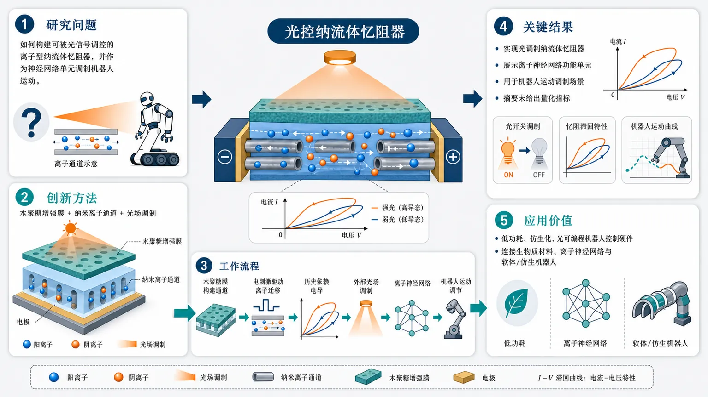
研究问题如何构建一种可被光信号调控的离子型纳流体忆阻器，并将其作为神经网络单元，用于实现机器人运动的可调制控制。创新方法提出“木聚糖增强膜 + 纳米离子通道 + 光场调制”的纳流体忆阻器：以生物质多糖木聚糖强化膜结构，利用纳米通道内离子迁移产生忆阻效应，再通过外部光照改变器件状态，形成可光控的离子神经形态单元。工作流程木聚糖增强膜构建纳米流体通道；电刺激驱动离子在通道中迁移并形成历史依赖电导；外部光场作为调制信号改变忆阻器响应；多个器件接入离子神经网络；网络输出控制信号，用于调节机器人运动状态。关键结果实现了光调制纳流体忆阻器，并展示其可作为离子神经网络的功能单元；器件结合木聚糖增强策略、离子迁移忆阻行为和光控调节能力，最终用于机器人运动调制场景。但摘要未给出开关比、响应时间、稳定性或机器人控制精度等具体量化指标。应用价值为低功耗、仿生化、光可编程的机器人控制系统提供新型硬件基础，可连接生物质材料、离子神经网络和软体/仿生机器人，实现更接近生物神经调控方式的运动控制。核心概览
该论文报道一种光调制、木聚糖增强的纳流体忆阻器，面向离子神经网络，并用于机器人运动调制；属于纳流体离子电子学、忆阻器与软/仿生机器人控制交叉方向。
方法要点
- 构建了以木聚糖增强膜为核心的纳流体忆阻器，利用生物质多糖材料改善或支撑器件结构。
- 通过纳米尺度流体通道中的离子迁移实现忆阻行为。
- 引入外部光场作为调制输入，用于调控器件或网络状态。
- 将该类忆阻器用于离子神经网络，以实现机器人运动调制。
- 摘要未详述具体制备工艺、膜结构参数、光响应机制或电路/网络架构。
关键结果
- 论文声称实现了“光调制”的纳流体忆阻器。
- 论文声称该器件采用“木聚糖增强”策略。
- 论文声称该器件可用于“离子神经网络驱动的机器人运动调制”。
- 摘要未详述电导调制幅度、开关比、响应时间、保持时间、循环稳定性等器件性能指标。
- 摘要未详述机器人运动控制精度、任务类型、实验平台或对照结果。
创新性判断
- 可能的新颖点在于将木聚糖这类生物质多糖材料引入纳流体忆阻器，作为增强膜材料，用于构建离子迁移型忆阻器；但具体增强效果摘要未详述。
- 可能的新颖点在于把光场调制与纳流体忆阻行为结合，使器件具备光-离子耦合的可调神经形态特性；但光调制机制和性能提升幅度摘要未详述。
- 可能的新颖点在于将该器件进一步用于离子神经网络和机器人运动调制，体现从材料器件到系统控制的集成应用；但系统实现细节和相对已有工作的优势摘要未详述。
- 总体看，该工作可能强调“生物质增强纳流体忆阻器 + 光调制 + 离子神经网络机器人控制”的交叉集成创新；其实际突破程度需依赖全文中的实验数据和对照验证。
-
02
📊 含图深析
📄 摘要：基于合成反铁磁结构制备抗辐照神经形态器件，用于海表温度重构。题名指向自旋结构在辐照环境下的稳定性与类脑计算结合；摘要页未给出材料堆栈、辐照剂量、误差或功耗数值。
💡 亮点：合成反铁磁器件被用于辐照环境下的神经形态重构。面向海表温度遥感，突出自旋类脑硬件的环境鲁棒性。
📖 展开分析 + 配图
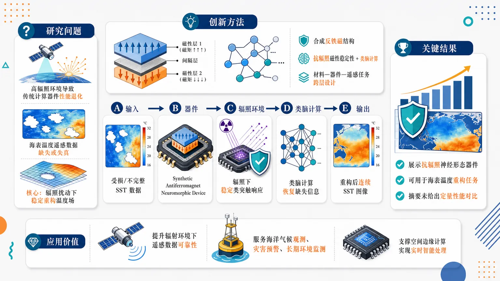
研究问题在空间辐射或海洋遥感等高辐照环境中，传统计算器件可能出现性能退化，导致海表温度遥感数据缺失或失真；核心问题是如何构建一种能在辐照扰动下稳定工作的类脑器件，用于可靠重构海表温度场。创新方法提出以合成反铁磁结构作为神经形态器件的物理核心，将自旋电子学中的磁性稳定结构与类脑计算结合；Aha 点在于把“抗辐照器件特性”直接服务于“海表温度重构”任务，形成从材料结构、器件可靠性到遥感数据恢复的跨层设计。工作流程输入受损或不完整的海表温度遥感数据；数据进入基于合成反铁磁结构的神经形态器件；器件在辐照环境下保持较稳定的类突触/计算响应；通过类脑计算过程恢复缺失或退化的温度信息；输出重构后的连续海表温度图像或温度场。关键结果论文明确展示了一种基于合成反铁磁结构的抗辐照神经形态器件，并将其用于海表温度重构任务；主要发现是该器件具备面向辐照环境的韧性定位，可支撑遥感数据恢复应用。摘要未提供具体突触性能、辐照剂量、重构误差或与 CMOS/其他器件的定量对比。应用价值该研究面向卫星遥感、海洋监测和空间边缘计算场景，可用于在辐射环境下恢复海表温度数据，提升海洋气候观测、灾害预警和长期环境监测的数据可靠性。核心概览
本文提出一种基于合成反铁磁结构的抗辐照神经形态器件，用于海表温度重构，属于自旋电子学器件、类脑计算与遥感数据恢复交叉方向。
方法要点
- 构建合成反铁磁结构，并将其用作神经形态器件的核心物理实现。
- 强调器件具备抗辐照能力，面向空间或海洋遥感等辐射环境下的应用。
- 将该类脑器件用于海表温度数据重构任务。
- 摘要未详述具体材料堆栈、器件结构参数、训练方法或重构算法。
- 摘要未详述辐照类型、剂量条件、测试流程或评价指标。
关键结果
- 摘要明确指出：该器件基于合成反铁磁结构，并具有“辐照韧性”定位。
- 摘要明确指出：该器件被用于海表温度重构任务。
- 摘要未给出突触性能、权重保持率、耐辐照退化程度、重构误差等定量结果。
- 摘要未说明与传统 CMOS、普通磁性器件或其他神经形态方案的性能对比结果。
创新性判断
- 可能的新颖点在于将合成反铁磁自旋结构与抗辐照神经形态计算结合，用于遥感数据重构场景；这一点相对常规神经形态器件具有应用环境上的针对性。
- 可能的新颖点还在于利用合成反铁磁结构的磁性稳定性或抗扰动特征提升辐照环境下的计算可靠性，但摘要未详述物理机制，需谨慎判断。
- 将器件级抗辐照特性与海表温度重构任务关联，体现了从材料/器件到应用任务的跨层设计思路；但具体性能优势摘要未给出，创新强度无法仅凭摘要定量评价。
-
03
📊 含图深析
📄 摘要：在 Co 掺杂 Mn3Sn 非共面反铁磁体中观察到宽温区巨拓扑霍尔效应。工作聚焦掺杂调控非共面自旋纹理与实空间贝里曲率；摘要页未列出霍尔电阻率、温度范围或掺杂比例。
💡 亮点：Co 掺杂 Mn3Sn 在非共面反铁磁态中呈现宽温区巨拓扑霍尔响应。该结果强化了反铁磁拓扑输运用于低杂散场自旋电子学的潜力。
📖 展开分析 + 配图
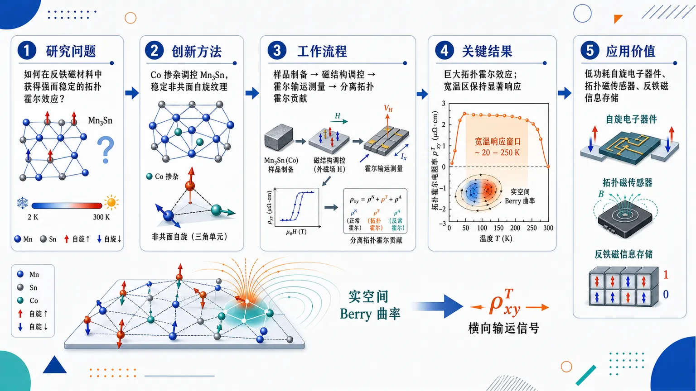
研究问题如何在反铁磁材料中获得强而稳定的拓扑霍尔效应：以 Co 掺杂 Mn₃Sn 为核心，探索非共面自旋纹理能否在较宽温度范围内产生显著实空间 Berry 曲率，并转化为可观测的横向输运信号。创新方法通过 Co 掺杂调控 Mn₃Sn 反铁磁体系，使材料形成或稳定非共面自旋结构；Aha 点在于利用非共面自旋纹理产生的实空间 Berry 曲率，把自旋构型直接转化为“巨大”拓扑霍尔响应，并让该响应跨越宽温区而非局限于低温窄窗口。工作流程制备 Co 掺杂 Mn₃Sn 非共面反铁磁样品 → 调控磁结构与自旋非共面性 → 在不同温度和磁场下测量横向霍尔输运 → 从总霍尔信号中识别拓扑霍尔贡献 → 将异常横向响应归因于非共面自旋纹理诱导的实空间 Berry 曲率。关键结果在 Co 掺杂 Mn₃Sn 中观察到巨大拓扑霍尔效应；该效应能够在较宽温度窗口内保持，而非只出现在极低温或窄温区；结果表明非共面反铁磁自旋纹理可有效产生强 Berry 曲率并显著增强横向输运响应。应用价值该研究提供了一种通过元素掺杂设计宽温区拓扑霍尔材料的路线，有望推动低功耗自旋电子器件、拓扑磁传感器和反铁磁信息存储材料的发展，尤其适合需要强横向电信号和较高温度稳定性的应用场景。核心概览
该论文研究 Co 掺杂 Mn₃Sn 非共面反铁磁体中的拓扑霍尔效应，方向属于拓扑磁性材料与反常横向输运，重点声称在较宽温度范围内实现“巨大”拓扑霍尔响应。
方法要点
- 研究对象为 Co 掺杂的 Mn₃Sn 体系，且被描述为非共面反铁磁体。
- 关注非共面自旋纹理引发的实空间 Berry 曲率及其对横向输运的贡献。
- 核心物理量是拓扑霍尔效应/拓扑霍尔电阻率，但摘要未详述具体提取方法。
- 摘要未给出 Co 掺杂比例、样品制备、磁结构测量或输运测试的具体实验条件。
- 摘要未说明如何区分普通霍尔效应、反常霍尔效应与拓扑霍尔效应的分量。
关键结果
- Co 掺杂 Mn₃Sn 中观察到“巨大”拓扑霍尔效应。
- 该拓扑霍尔效应存在于“较宽温度窗口”。
- 该效应被归因于非共面自旋纹理产生的实空间 Berry 曲率。
- 摘要未详述拓扑霍尔电阻率的数值大小、温度范围上下限或磁场依赖特征。
- 摘要未详述磁结构表征结果，因此非共面磁结构的具体形式无法从摘要确定。
创新性判断
- 可能的新颖点在于：通过 Co 掺杂调控 Mn₃Sn，使其形成或稳定非共面反铁磁态，并诱导显著拓扑霍尔响应。
- 另一潜在创新点是：拓扑霍尔效应不仅较强，而且可在宽温区保持，这对拓扑磁输运和潜在器件应用具有意义。
- 相比常见只在低温或窄温区出现的拓扑霍尔信号，若该工作确实实现宽温区巨大响应，则具有较强材料发现价值；但具体优势程度因摘要未给出数值和对比基准，无法严格判断。
- Co 掺杂在其中是诱导非共面自旋纹理、调控 Berry 曲率还是仅优化输运响应，摘要未详述，机制创新性仍需全文验证。
-
04
📊 含图深析
📄 摘要：非厄米量子几何被用于判断量子放大何时只依赖初态与末态。报道围绕开放系统中的广义 Berry 相及其几何量，解释能量交换体系里放大过程的路径依赖或无关条件。
💡 亮点：非厄米几何给出量子放大是否路径无关的判据。该框架扩展了 Berry 几何在开放量子材料和增益体系中的作用。
📖 展开分析 + 配图
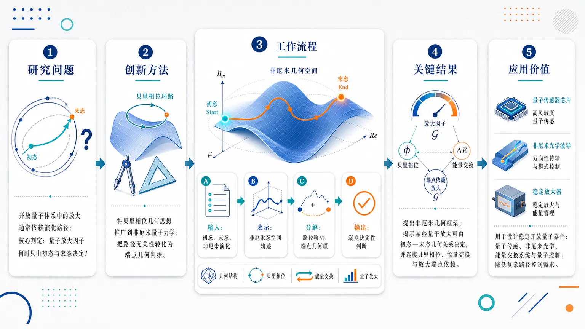
研究问题开放量子体系中的放大过程通常会随具体演化路径变化；论文聚焦一个核心判定问题：何时量子放大因子只由量子态空间中的起点与终点决定，而不需要追踪中间经过的完整动力学轨迹。创新方法将贝里相位的几何思想推广到非厄米量子力学，用非厄米量子态空间的几何结构来刻画放大行为；Aha 点在于把“放大是否路径无关”转化为一个几何判据：看放大是否可由端点之间的非厄米几何关系直接决定。工作流程输入开放量子体系的初态、末态及非厄米演化描述；在非厄米量子态空间中表示其演化轨迹；引入推广的非厄米贝里相位/几何量；分析放大因子中哪些部分来自路径、哪些部分只来自端点；输出量子放大是否具备“端点决定性”的判断。关键结果论文提出了一个非厄米几何框架，揭示某些量子放大并不需要依赖完整演化路径，而可由初态与末态的几何关系决定；同时建立了非厄米贝里相位、开放体系能量交换和量子放大端点依赖之间的概念联系。应用价值该框架可用于设计和分析开放量子器件中的稳定放大过程，例如量子传感、非厄米光学、能量交换系统和量子控制；若放大只由端点决定，则可减少对复杂路径控制的需求，提高器件设计的几何可预测性。核心概览
该论文属于非厄米量子几何方向，研究开放/增益损耗量子体系中的几何判据，用于判断量子放大何时仅由初态和末态决定，而与演化路径无关。
方法要点
- 将 Berry 相位等几何概念推广到非厄米量子力学框架中讨论。
- 关注开放体系或含增益/损耗体系中量子放大的路径依赖性问题。
- 提出或使用一种“非厄米几何判据”来区分放大是否只依赖起点和终点。
- 摘要未详述具体模型哈密顿量、实验平台、理论推导细节或数值方法。
关键结果
- 论文报道了一个用于判断量子放大路径无关性的非厄米几何判据。
- 当满足该几何判据时，量子放大可只由初态和末态决定。
- 该结果表明，在非厄米体系中，放大过程的可预测性可由几何结构刻画。
- 摘要未给出具体放大因子、适用参数范围、实验验证结果或模型实例。
创新性判断
- 可能的新颖点在于：将非厄米几何结构与“量子放大是否路径无关”这一判定问题直接联系起来。
- 相比一般研究非厄米 Berry 相位或增益损耗动力学的工作，该论文似乎更强调一个可操作的几何判据。
- 其创新性也可能体现在把端点决定性与非厄米几何条件联系起来，但摘要未详述具体数学形式，因此判断仍有不确定性。
-
05
📊 含图深析
📄 摘要：设计双极轴互生铁电体用于光催化整体水分解。体系利用相邻极化轴或内建电场促进光生电荷分离，目标是提升效率与稳定性；摘要页未给出化学组成、产氢/产氧速率或循环寿命。
💡 亮点：双极轴互生铁电结构把极化调控引入整体水分解。铁电内建场为光催化电荷分离提供了可设计自由度。
📖 展开分析 + 配图
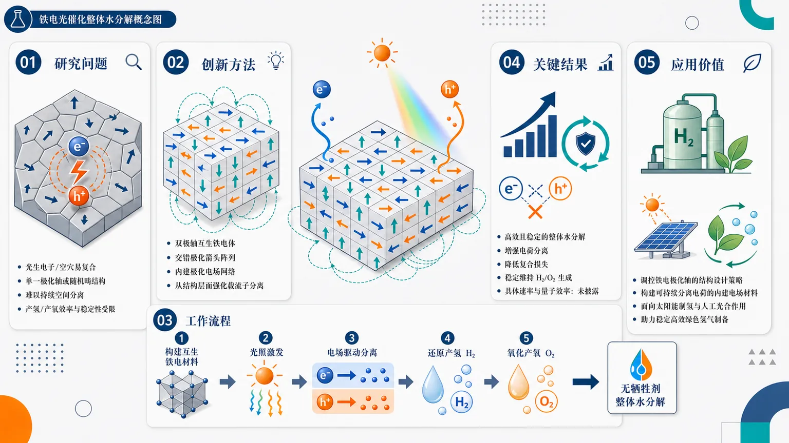
研究问题普通铁电光催化剂在整体水分解中，光生电子与空穴容易复合，单一极化轴或随机畴结构难以提供持续、有效的空间分离通道，导致产氢/产氧效率和长期稳定性受限。创新方法提出“双极轴互生铁电体”结构：在同一材料中组织相反或多向极化轴，像交错排列的极化箭头阵列一样形成内建极化电场网络，引导电子和空穴向不同区域迁移，从结构层面强化载流子分离。工作流程构建具有双极轴互生结构的铁电光催化材料；光照激发产生电子—空穴对；互生极化轴形成的内建电场驱动电荷定向分离；电子参与还原反应生成氢气，空穴参与氧化反应生成氧气；最终实现无牺牲剂的整体水分解。关键结果论文声称该双极轴互生铁电结构实现了高效且稳定的光催化整体水分解；核心性能提升来自极化轴互生结构增强电荷分离、降低复合，并维持产氢与产氧反应的稳定进行。具体产气速率、量子效率和循环稳定性数据在所给内容中未披露。应用价值为太阳能制氢提供一种结构设计思路：通过调控铁电极化轴而非单纯改变成分或负载助催化剂，构建可持续分离电荷的内建电场材料，有望用于稳定、高效的绿色氢气制备和人工光合作用体系。核心概览
该论文属于铁电光催化整体水分解方向，拟通过“双极轴互生”铁电结构构建内建极化场，以促进光生载流子分离并提升光催化效率与稳定性。
方法要点
- 利用铁电材料的自发极化特性，构建有利于电子—空穴分离的内建电场。
- 通过“互生结构”组织相反或多向极化轴，形成所谓“双极轴互生铁电体”。
- 应用于光催化整体水分解，即同时实现产氢与产氧。
- 具体材料组成、合成方法、表征手段和光催化测试条件：摘要未详述。
关键结果
- 题名声称该材料可实现“高效、稳定”的光催化整体水分解。
- 论文核心结论应与极化轴互生结构促进载流子分离、提升整体水分解性能有关。
- 具体产氢/产氧速率、量子效率、稳定性循环次数或对照实验结果：摘要未详述。
创新性判断
- 可能的新颖点在于通过“双极轴互生”结构设计调控铁电极化方向，而不只是依赖单一极化轴或普通铁电畴结构。
- 该设计可能试图在材料内部构建更有效的空间电荷分离路径，从而提升整体水分解效率和稳定性。
- 但由于摘要未披露材料体系、结构证据、性能数据及与已有工作的比较，创新性强弱和实际优势仍无法确定。
-
06
📊 含图深析
📄 摘要：提出反向磁场诱导的三维笼状架构，作为可规模化制备微米级电磁波吸收体的路线。题名显示磁场反向调控组装形貌；摘要页未给出组分、吸收带宽、反射损耗或厚度。
💡 亮点：反向磁场被用于构筑三维笼状微米吸波结构。可规模化形貌调控为轻量电磁吸收材料提供加工路径。
📖 展开分析 + 配图
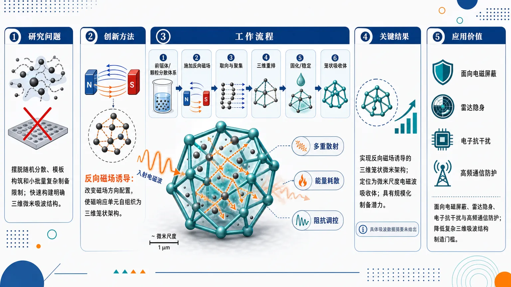
研究问题如何摆脱传统随机分散、模板构筑或小批量复杂制备的限制，快速构建具有明确三维空间结构的微米级电磁波吸收体，使材料在微尺度上形成有利于电磁波多重散射、能量耗散和阻抗调控的笼状架构。创新方法提出“反向磁场诱导”策略：通过改变磁场方向配置，引导磁响应单元在微米尺度自组织成三维笼状结构，而不是简单线性排列或无序堆积；Aha 点在于用反向磁场把外场操控转化为空间笼架搭建手段，为吸波材料提供可放大的结构化制备路径。工作流程输入磁响应吸波前驱体或颗粒分散体系；施加特定方向配置的反向磁场；颗粒在磁场作用下发生取向、聚集与三维重排；形成微米级笼状架构；固化或稳定结构；得到三维笼状电磁波吸收体并用于吸波性能评估。关键结果论文明确实现了由反向磁场诱导形成的三维笼状微米架构，并将其定位为微米尺度电磁波吸收体；该路线被强调具有规模化制备潜力。但摘要未给出反射损耗、有效吸收带宽、匹配厚度、工作频段或对照性能数据，因此具体吸波提升幅度无法从现有内容判断。应用价值该研究为轻量化、微型化、结构可控的电磁波吸收材料提供新的制备思路，可面向电磁屏蔽、雷达隐身、电子器件抗干扰和高频通信设备防护等场景；其可规模化特征有望降低复杂三维吸波结构的制造门槛。核心概览
该论文属于电磁波吸收材料/微结构调控方向，提出用反向磁场诱导构建三维笼状微米级吸波架构的可规模化制备路线。
方法要点
- 利用外加磁场方向反转诱导微结构发生重构。
- 构建三维笼状架构作为微米级电磁波吸收单元。
- 通过结构设计可能增强多重散射、改善阻抗匹配或提升磁损耗。
- 论文强调该策略具有可规模化制备潜力。
- 材料组成、制备参数、磁场强度及具体工艺流程摘要未详述。
关键结果
- 摘要明确提出“反向磁场诱导”可形成三维笼状架构。
- 该三维笼状架构被定位为微米级电磁波吸收体。
- 论文声称该方法是一条可规模化制备路线。
- 关于有效吸收带宽、最小反射损耗、匹配厚度、填充比例等性能指标，摘要未详述。
- 关于吸收机理的定量验证或对照实验，摘要未详述。
创新性判断
- 可能的新颖点在于将“磁场方向反转”作为驱动力，用于诱导吸波材料形成三维笼状微结构；这一结构调控方式相较普通磁场取向或随机组装可能更具可设计性。
- 三维笼状微米级吸波单元可能有助于同时引入多重散射、界面极化、阻抗匹配调节和磁损耗增强，但具体机制摘要未给出实验证据。
- “可规模化路线”若在全文中有工艺和产量验证，可能提升其实用价值；但摘要未详述规模化程度、重复性和成本。
- 因缺少材料体系和性能数据，无法判断其相对现有吸波材料在吸收强度、带宽、厚度或轻量化方面是否具有实质优势。
-
07
📊 含图深析
📄 摘要：制备可重构铁电异质结构器件，集成自供能宽带传感、光谱调谐和光电子突触功能。题名显示极化态可作为调控自由度；摘要页未披露材料组合、探测率、光谱范围或突触指标。
💡 亮点：铁电异质结构通过可重构极化实现传感、谱调谐与突触行为。该多功能器件面向低功耗神经形态光电子集成。
📖 展开分析 + 配图
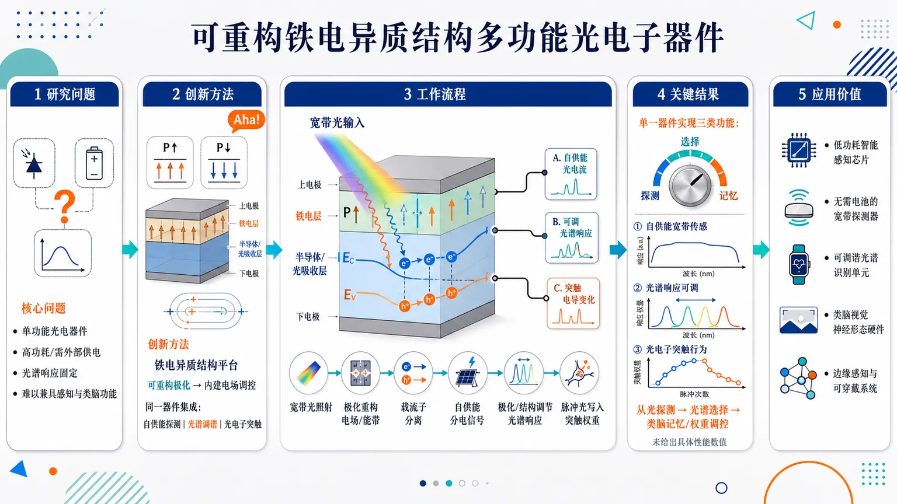
研究问题如何用一个可重构的铁电异质结构器件，同时实现无需外部供电的宽带光电传感、可调光谱响应，以及类脑光电子突触功能，突破传统光电器件单功能、功耗高、响应固定的问题。创新方法以铁电异质结构作为核心平台，利用铁电极化带来的可重构内部电场来调控光生载流子分离、光谱响应和突触权重，把“自供能探测器、光谱调谐器、光电子突触”集成在同一个可切换器件中，这是论文的 Aha 点。工作流程入射宽带光照射到铁电异质结构；铁电极化状态重构器件内部电场与能带；光生电子和空穴被内建场分离并产生自供能光电信号；通过改变极化/结构状态调节不同波段响应；连续或脉冲光刺激进一步写入/调节突触权重，输出传感信号、可调光谱响应和类突触电导变化。关键结果论文声称该单一器件平台可实现三类功能：自供能宽带传感、光谱调谐和光电子突触行为；核心结果表现为一个铁电异质结构从“光探测”切换到“光谱选择”再到“类脑记忆/权重调控”的多功能集成能力。但给定内容未提供具体响应波段、灵敏度、功耗、调谐范围或突触性能数值。应用价值该研究可为低功耗智能感知芯片、无需电池的宽带光探测器、可调谐光谱识别单元和类脑视觉神经形态硬件提供器件基础，适合用于边缘感知、可穿戴光电系统、智能成像和光驱动神经网络。核心概览
该论文属于铁电异质结构光电子器件方向，提出一种可重构器件，用于自供能宽带光传感、光谱调谐及光电子突触功能集成。
方法要点
- 利用铁电极化作为非易失性调控自由度，实现器件状态可重构。
- 通过铁电极化调节异质结能带结构，从而改变光电响应特性。
- 在同一异质结构器件中集成光探测与类突触可塑性功能。
- 器件被设计为自供能工作模式，但具体实现机制摘要未详述。
- 涉及宽带传感和光谱调谐，但具体材料体系、波段范围和调谐方式摘要未详述。
关键结果
- 摘要明确指出该器件可实现自供能宽带传感。
- 摘要明确指出该器件具备光谱调谐能力。
- 摘要明确指出该器件可表现光电子突触功能。
- 铁电极化被用于调控异质结能带与光响应。
- 原始摘要未提供响应率、探测率、响应速度、工作波段、功耗、保持特性或突触性能指标等具体结果。
创新性判断
- 可能的新颖点在于将铁电非易失极化调控、宽带自供能光探测、光谱可调响应和光电子突触功能集成于同一异质结构器件中。
- 相比单一光探测器或单一光电子突触器件，其潜在创新性可能体现在“多功能一体化”和“可重构铁电调控”上。
- 由于摘要未详述材料体系、器件结构、性能数据及对比实验，其相对同方向工作的性能优势和原创程度无法确定。
-
08
📊 含图深析
📄 摘要：制备夹心结构空心玻璃微球/有机硅复合材料，实现高性能电磁干扰屏蔽并保持超低电导率。题名指向绝缘轻质填料与界面结构设计；摘要页未给出屏蔽效能、密度或电导率。
💡 亮点：空心玻璃微球/硅胶夹心复合物兼顾屏蔽与低导电。该结构适合需要绝缘安全性的电磁防护封装。
📖 展开分析 + 配图
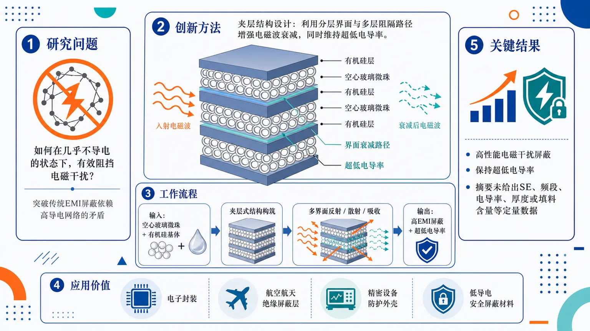
研究问题如何让空心玻璃微珠/有机硅复合材料在几乎不导电的状态下，仍能有效阻挡电磁干扰，突破传统EMI屏蔽材料依赖高导电网络的矛盾。创新方法以“夹层结构”为核心视觉与功能设计：将空心玻璃微珠和有机硅构造成分层复合体系，用结构界面与多层阻隔路径增强电磁波衰减，同时维持超低电导率。工作流程输入为空心玻璃微珠与有机硅基体；通过夹层式结构设计形成分层复合材料；电磁波进入材料后在多层界面中发生反射、散射与吸收衰减；最终输出兼具高EMI屏蔽性能和超低电导率的复合屏蔽材料。关键结果论文声称该夹层空心玻璃微珠/有机硅复合材料实现了高性能电磁干扰屏蔽，并保持超低电导率；但摘要未提供屏蔽效能、频段、电导率数值、厚度或填料含量等定量结果。应用价值适用于需要电磁防护但又必须避免导电风险的场景，如电子封装、航空航天绝缘屏蔽层、精密设备防护外壳和低导电安全屏蔽材料。核心概览
该论文属于电磁干扰屏蔽复合材料方向，研究夹层结构空心玻璃微球/有机硅复合材料，目标是在保持超低电导率的同时实现高性能EMI屏蔽。
方法要点
- 采用空心玻璃微球与有机硅构建复合材料体系。
- 设计“夹层结构”作为关键结构特征，以增强电磁波屏蔽能力。
- 材料策略可能侧重绝缘、轻质填料与结构化界面/多层反射机制，而非传统高导电填料路径。
- 摘要未详述制备工艺、层数设计、组分比例或界面调控方法。
关键结果
- 论文声称该复合材料可实现“高性能电磁干扰屏蔽”。
- 论文声称材料同时保持“超低电导率”。
- 摘要未详述屏蔽效能、电导率、密度、介电性能、力学性能等具体数值。
- 摘要未详述与对照样品或已有材料的定量比较。
创新性判断
- 可能的新颖点在于：通过夹层结构设计，使绝缘型空心玻璃微球/有机硅复合材料获得较好EMI屏蔽性能，同时避免高导电填料带来的导电性上升。
- 相比常见依赖碳材料、金属填料或导电网络的屏蔽材料，该工作可能强调“低电导率条件下的结构型屏蔽机制”。
- 空心玻璃微球的轻质、绝缘特性与有机硅基体结合，可能面向轻量化、绝缘安全或柔性封装等应用场景；但摘要未详述具体应用验证。
- 以上创新性判断主要基于题名和摘要表述，具体机制、性能优势和相对先进性需全文数据支持。
-
09
📊 含图深析
📄 摘要：通过肌纤维取向编程和磁辅助转向实现生物混合毫米机器人可控自推进。体系把活性肌肉收缩与外磁场导航耦合；摘要页未给出推进速度、转向半径或载荷能力。
💡 亮点：肌纤维排列被用作毫米机器人的推进程序。磁场转向补充了生物驱动的不确定性，适合软体微机器人控制。
📖 展开分析 + 配图
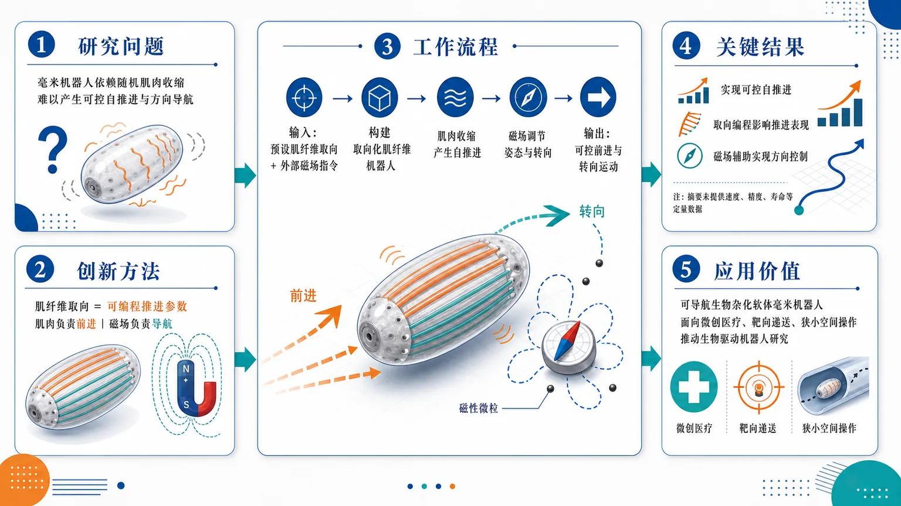
研究问题如何让生物杂化毫米机器人不再依赖随机肌肉收缩，而是通过可设计的肌纤维排列产生可控自推进，并在毫米尺度下实现方向导航。创新方法将肌纤维取向作为“可编程推进参数”：通过预设肌纤维排列方向来调控机器人运动模式，同时引入外部磁场承担转向功能，形成“肌肉负责前进、磁场负责导航”的分工式控制策略。工作流程输入为预设肌纤维取向与外部磁场指令；先构建带有取向化肌纤维的生物杂化毫米机器人，肌纤维收缩产生自推进，再通过磁场对机器人姿态或运动方向进行辅助调节，最终输出可控前进与转向运动。关键结果实现了具有可控自推进能力的生物杂化毫米机器人；证明肌纤维取向编程可影响推进表现，磁场辅助可实现方向控制。但摘要未提供速度、转向精度、寿命、载荷或统计显著性等定量性能数据。应用价值为可导航生物杂化软体毫米机器人提供设计思路，可用于未来微创医疗、靶向递送、狭小空间操作和生物驱动机器人研究，尤其适合需要柔顺驱动与外部精准导航结合的场景。核心概览
本文属于生物混合毫米机器人/软体机器人方向，研究通过编程肌纤维取向实现肌肉驱动的可控自推进，并结合外部磁场进行辅助转向与导航。
方法要点
- 利用肌肉纤维的可设计排列/取向编程，调控收缩产生的推进方向或运动模式。
- 采用生物肌肉组织作为机器人自推进的驱动来源。
- 引入外部磁场作为辅助机制，用于 steering，即转向、补偿或导航控制。
- 机器人尺度为毫米级，但具体尺寸摘要未详述。
- 肌肉组织类型、培养方式、磁性材料集成方式与磁场参数摘要未详述。
关键结果
- 摘要明确表明该系统实现了“可控自推进”。
- 摘要明确表明推进控制与肌纤维取向编程相关。
- 摘要明确表明系统结合了“磁辅助转向”。
- 具体性能指标如速度、转弯半径、响应时间、运动稳定性等摘要未详述。
- 机器人尺寸、肌肉类型、磁场强度等实验细节摘要未详述。
创新性判断
- 可能的新颖点在于将“肌纤维取向编程”作为运动控制核心，而不仅仅依赖外部场直接驱动；这一点有助于从结构设计层面调控生物肌肉产生的推进。
- 另一潜在创新是将内源性肌肉收缩推进与外部磁场转向相结合，实现推进与导航功能分工。
- 相比单纯磁驱动或单纯肌肉驱动的毫米机器人，该工作可能强调“生物自推进 + 磁辅助操控”的协同控制策略。
- 以上创新性判断仅基于题名和摘要信息；与已有工作的具体差异、性能提升幅度和实验验证深度，摘要未详述。
-
10
📊 含图深析
📄 摘要：面向超过 250 °C 的宽禁带功率器件封装，在硅凝胶中构筑无改性剂 0D/2D 混杂填料。利用氧空位诱导静电锚定抑制高温介电劣化；摘要截断，未给出填料种类和寿命数据。
💡 亮点：氧空位静电锚定替代传统化学改性来稳定硅凝胶。该 0D/2D 填料架构瞄准 250 °C 以上功率封装介电可靠性。
📖 展开分析 + 配图
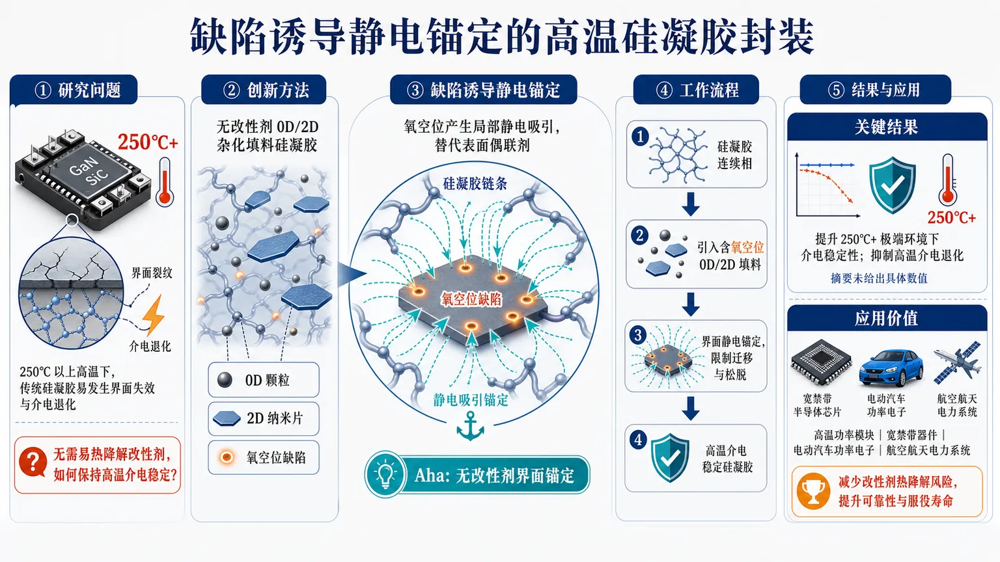
研究问题宽禁带功率器件在 250°C 以上极端高温工作时，传统硅凝胶封装材料容易发生界面失效和介电退化；核心问题是如何在不依赖易热降解改性剂的情况下，保持封装硅凝胶的高温介电稳定性。创新方法提出无改性剂 0D/2D 杂化填料硅凝胶，利用填料中的氧空位缺陷产生静电吸引，将填料与硅凝胶网络牢固“锚定”；Aha 点是用缺陷诱导的静电锚定替代传统表面偶联剂，实现高温下更稳定的界面结合。工作流程以硅凝胶基体为连续相，引入含氧空位缺陷的 0D/2D 杂化填料；缺陷位点在填料界面形成局部静电锚定作用，限制填料迁移和界面松脱；最终获得面向 250°C 以上功率器件封装的高温介电稳定硅凝胶材料。关键结果该策略面向 250°C 以上极端温度环境，可提升硅凝胶封装材料的介电稳定性，抑制高温介电退化；论文摘要未给出击穿强度、介电常数、介电损耗、老化寿命等具体数值，但明确强调其适用于宽禁带功率器件高温封装场景。应用价值为高温功率模块、宽禁带半导体器件、电动汽车功率电子、航空航天电力系统等提供更耐热、更稳定的封装材料方案；避免改性剂热降解带来的界面失效，有助于提升极端温度下器件可靠性和服役寿命。核心概览
该论文面向宽禁带半导体高温功率器件封装，提出一种无改性剂的 0D/2D 混合填料硅凝胶体系，通过氧空位诱导静电锚定构筑稳定界面，以缓解高温介电退化。
方法要点
- 采用 0D/2D 混合填料架构引入硅凝胶封装体系。
- 不使用表面改性剂，而是依赖填料缺陷，尤其是氧空位，实现界面调控。
- 利用氧空位诱导的静电锚定增强填料与硅凝胶之间的界面稳定性。
- 目标应用场景为超过 250 °C 的宽禁带半导体功率器件封装。
- 摘要未详述具体填料种类、制备工艺、测试条件或表征方法。
关键结果
- 该策略旨在解决硅凝胶在高温功率器件封装中的加速介电退化问题。
- 摘要明确表明，氧空位诱导的静电锚定可在硅凝胶内构筑稳定界面。
- 摘要未给出介电寿命提升倍数、击穿强度、热老化性能或长期可靠性等具体数值结果。
- 摘要未详述与传统硅凝胶或改性填料体系的定量对比。
创新性判断
- 可能的新颖点在于：不依赖传统表面改性剂，而利用填料自身缺陷，即氧空位，实现硅凝胶界面锚定与稳定化。
- 0D/2D 混合填料架构用于高温功率器件封装介电可靠性提升，可能体现了多尺度填料协同设计思路。
- 相较常见的化学改性或偶联剂增强界面方法，该工作可能强调“缺陷诱导静电锚定”作为界面工程机制。
- 但由于摘要未详述填料类型、对照体系、性能数据和机理证据，其相对同方向工作的创新幅度仍无法准确判断。
-
11
📊 含图深析
📄 摘要：设计超支化介电聚合物网络，通过扩大链间距并抑制次级弛豫来降低高温电荷转移。在 250 °C 下实现 4.9 J/cm³ 储能密度和 90% 效率，面向热极端条件下的电容储能。
💡 亮点：超支化网络在 250 °C 仍给出 4.9 J/cm³、90% 效率。该策略把分子链间距与弛豫抑制直接关联到高温介电储能。
📖 展开分析 + 配图
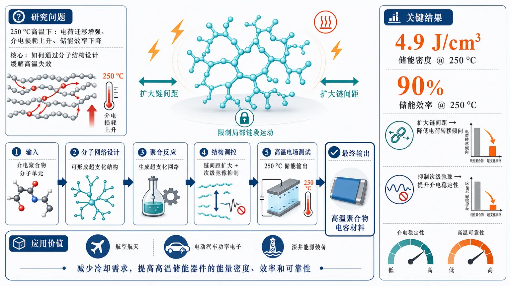
研究问题传统聚合物电介质在 250 °C 高温下容易发生电荷迁移增强、介电损耗上升和储能效率下降，难以同时获得高储能密度与高效率；核心问题是如何通过分子结构设计缓解高温失效。创新方法构建超支化介电聚合物网络，用三维分子网络扩大聚合物链间距，削弱链间电荷转移通道；同时抑制高温下的次级弛豫，使材料在热极端环境中保持更稳定的介电响应，这是区别于填料复合或界面改性的分子网络调控策略。工作流程输入为可形成超支化结构的介电聚合物分子单元；通过分子网络设计与聚合反应生成超支化聚合物网络；网络结构拉开链间距离并限制局部链段运动；随后在高温电场下测试介电储能行为；输出为 250 °C 下兼具高储能密度和高效率的聚合物电容材料。关键结果该超支化介电聚合物网络在 250 °C 下实现 4.9 J/cm³ 的储能密度，并保持 90% 的储能效率；结果表明扩大链间距可降低电荷转移倾向，抑制次级弛豫可提升高温介电稳定性。应用价值为航空航天、电动汽车功率电子、深井能源装备等高温环境中的薄膜电容器提供新的聚合物电介质方案，可减少冷却需求，提高高温储能器件的能量密度、效率和可靠性。核心概览
该论文属于高温聚合物介电储能材料方向，设计超支化介电聚合物网络，以缓解高温电荷转移和介电损耗，在 250 °C 下实现高储能密度与高效率。
方法要点
- 通过构建超支化介电聚合物网络来调控分子链结构。
- 利用扩大链间距的策略抑制高温下电荷转移。
- 通过抑制次级弛豫来降低高温介电损耗。
- 目标是在高温条件下同时维持击穿强度与极化性能。
- 具体合成路线、结构表征方法和测试条件摘要未详述。
关键结果
- 材料在 250 °C 下实现 4.9 J/cm³ 的储能密度。
- 材料在 250 °C 下实现 90% 的储能效率。
- 摘要表明，该超支化分子网络可降低高温损耗。
- 摘要表明，该结构在降低损耗的同时仍能维持击穿与极化性能。
- 与何种基准材料或商用聚合物对比、提升幅度等摘要未详述。
创新性判断
- 可能的新颖点在于：将“超支化介电网络”用于高温聚合物电容储能，通过分子网络结构同时调控链间距、弛豫行为、电荷转移和宏观储能性能。
- 相比常见的无机填料复合、交联或共聚改性策略，该工作可能更强调从分子网络拓扑层面降低高温损耗并保持击穿/极化性能。
- 但是否为首次提出、与已有超支化或交联介电聚合物相比的优势幅度，摘要未详述，需全文验证。
-
12
📊 含图深析
📄 摘要：将物联网安全事件表述为连续时间动力学，虫害、僵尸网络、流量异常和耗能攻击由速率、流与反馈驱动。微分方程 ẋ=f(x,θ) 编码机制，机器学习则学习同一状态 x(t) 的时间演化表示。
💡 亮点：物联网威胁建模被统一到状态空间动力学框架。微分方程与机器学习的结合有助于解释型异常检测和防御策略设计。
📖 展开分析 + 配图
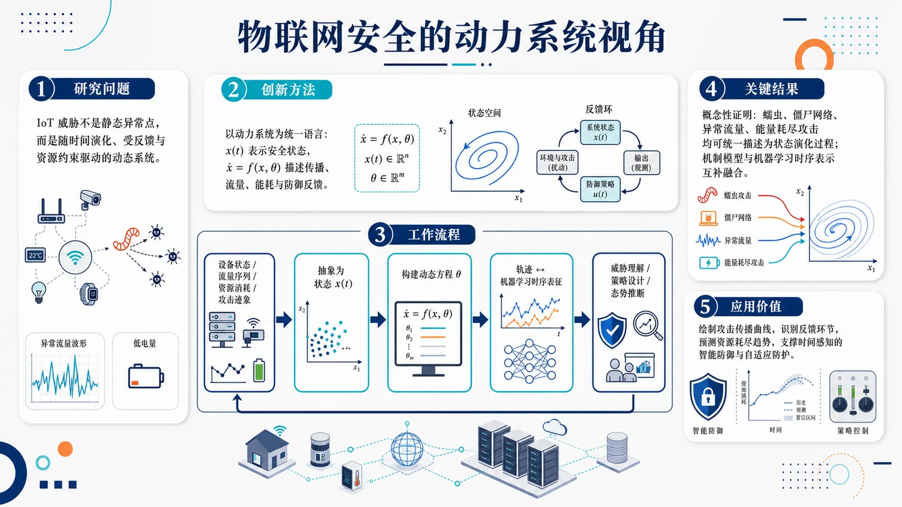
研究问题物联网设备在蠕虫传播、僵尸网络扩散、异常流量爆发和能量耗尽攻击中呈现持续演化特征；核心问题是如何不再把威胁视为静态异常点，而是把 IoT 安全风险建模为随时间变化、受反馈和资源约束驱动的动态系统，并据此理解机器学习防御。创新方法论文的 Aha 点是用“动力系统”作为统一语言：把 IoT 安全状态表示为 x(t)，用微分方程 ẋ=f(x,θ) 描述攻击传播、流量变化、资源消耗和防御反馈；同时将机制模型与机器学习的时序表征放入同一框架，把攻击动力学和智能防御连接起来。工作流程输入为 IoT 网络中的设备状态、流量时间序列、资源消耗和攻击迹象；先将其抽象为系统状态 x(t)，再用速率、流、反馈参数 θ 构建动态方程，刻画威胁随时间扩散或衰减；随后将这些动态轨迹与机器学习时序特征对应，用于威胁理解、防御策略设计和安全态势推断。关键结果论文主要给出概念性结果：证明性地提出 IoT 威胁可在统一的状态演化框架下描述，蠕虫、僵尸网络、异常流量和能量耗尽攻击都可被视为动态过程；同时指出微分方程机制模型与机器学习时序表示可以互补融合。摘要未提供具体数据集、检测准确率、性能提升或对比实验。应用价值该研究为安全人员提供一种系统级防御视角：可用于绘制攻击传播曲线、识别关键反馈环节、预测资源耗尽趋势，并帮助设计更具时间感知能力的智能防御系统；尤其适合复杂 IoT 网络中的威胁建模、态势感知和自适应防护策略设计。核心概览
论文从动力系统视角统一建模物联网威胁演化与机器学习防御，属于 IoT 安全、威胁建模与智能防御方向。
方法要点
- 将物联网安全问题表述为系统状态 (x(t)) 随时间演化的问题。
- 用微分方程 (dotx=f(x,θ)) 描述威胁传播、异常流量和资源耗尽等机制。
- 将蠕虫、僵尸网络、流量异常、能量耗尽攻击理解为由速率、流和反馈驱动的动态过程。
- 把机制建模与机器学习时序表征视为同一对象的两种描述。
- 目标是服务于威胁建模与防御设计；具体防御算法、训练方式摘要未详述。
关键结果
- 摘要明确提出：IoT 安全威胁可以用动力系统状态演化框架统一刻画。
- 摘要明确指出：微分方程机制模型与机器学习时序表征可被放在同一分析框架中理解。
- 摘要未给出实验数据集、检测指标、性能对比或实证结果。
- 摘要未详述具体模型参数、攻击场景规模或部署环境。
创新性判断
- 可能的新颖点在于：用动力系统语言统一描述 IoT 威胁建模与机器学习防御，而不是仅把二者作为独立模块处理。
- 相比常见的静态特征检测或单纯机器学习分类方法，该工作可能更强调攻击过程的时间演化、反馈机制和系统级动态。
- 其创新性更偏概念框架或方法论整合；是否有实证性能优势，摘要未详述，无法判断。
-
13
📄 摘要：面向低信噪比与分布外透射电子显微数据，构建机器学习去噪流程，用于处理实验 TEM 图像在噪声强、训练分布偏移时的重建问题。摘要未给出网络结构、数据规模或定量指标。
💡 亮点：该流程把低信噪比 TEM 与分布外数据同时纳入去噪任务。若能稳健保留原子级结构信息，将直接改善计算材料中的显微表征数据质量。
-
14
📄 摘要：提出量子增强 Newton–Raphson 积分框架，将 HHL 量子线性求解器嵌入 HHT-α 时步格式，用于非线性时程分析。目标把 O(N³) 城市级地震结构仿真的墙钟时间降低约三数量级。
💡 亮点：HHL 被嵌入经典非线性结构动力学迭代。该混合量子框架展示了量子线性代数在大规模工程仿真中的潜在加速路径。
-
15
📄 摘要：Paderborn 大学在半导体量子点中首次实验演示 Rabi 振荡的“回归”。该现象 2007 年已有理论预言：声子相互作用先阻尼量子点发光强度，随后振荡信号重新出现，增强量子态控制。
💡 亮点：半导体量子点中观测到声子阻尼后的 Rabi 振荡回归。该效应为固态量子发光体的相干控制提供了实验支撑。
-
16
📄 摘要：Max Planck 光科学研究所发展洁净晶体表面单分子探测技术，使表面分子光谱达到最终量子极限。结果可用于解析分子-表面相互作用，并支撑分子量子技术中的高精度读出。
💡 亮点：洁净晶面上单分子光谱达到量子极限。该技术把表面吸附分子的相互作用研究推进到极限灵敏度。
-
17
📄 摘要：在随机区组 2×4 因子设计中，评估 Bacillus subtilis、Trichoderma harzianum 及其与微藻 Parachlorella sp. 联用对大豆水分亏缺响应的影响。关注热带环境下生长和生理过程受胁迫后的缓解。
💡 亮点：微生物与微藻组合被用于调节大豆缺水响应。该农业生物材料方向与凝聚态关联较弱，但体现了功能生物体系的胁迫调控。
-
18
📄 摘要：构建石墨/氧化石墨烯承载的卟啉基双层共价有机结构，经乙二胺双齿连接形成重复 COS，用作无金属 PCET 析氧催化剂。体系在碱性和中性介质中工作，针对质子转移滞后限制。
💡 亮点：卟啉双层共价有机结构实现无金属 PCET 析氧。石墨/氧化石墨烯支撑的有序连接有助于同步质子与电子转移。
-
19
📄 摘要：体系为 PtCu 互锁网络电催化剂，方法是电化学退火调控网络结构与表面化学，使氧还原反应中间体吸附趋近萨巴蒂耶最优区间；题名给出的核心结论是获得稳定氧还原性能。输入摘要未给出半波电位、质量活性或耐久测试数值。
💡 亮点：PtCu 互锁网络通过电化学退火把氧吸附调到更接近萨巴蒂耶最优。该思路把合金网络结构稳定性与氧还原吸附能调控直接耦合，适合质子交换膜燃料电池催化剂设计。
-
20
📄 摘要：体系为纳米限域单原子网络，方法是定制介孔孔道架构以稳定分散单原子位点并调控反应物传质；题名指向稳定类芬顿催化，核心结论是孔结构与单原子网络协同提升催化稳定性。输入摘要未给出金属元素、孔径、降解速率或循环寿命数值。
💡 亮点：纳米限域单原子网络把活性位点稳定化与介孔传质通道设计结合。对类芬顿催化而言，这种结构可同时缓解单原子迁移失活和扩散受限问题。
-
21
📄 摘要：采用溶胶-凝胶法合成 LaNi0.95Fe0.05O3 与 La0.95Ho0.05Ni0.95Fe0.05O3。XRD 和 FESEM 显示畸变菱方相逐步形成，粒径 9–15 nm；结合 FTIR、UV-Vis DRS、PL 和 XPS 分析带隙与发光变化。
💡 亮点：Ho/Fe 共掺杂调控 LaNiO3 钙钛矿的结构畸变、带隙与光发光。9–15 nm 颗粒体系面向可持续能源光功能材料筛选。
-
22
📄 摘要：在光纤端原位 Ca2+ 交联形成海藻酸钠水凝胶纤维，构建柔性光纤耦合 SERS 传感器。器件兼具远程拉曼读出和曲面食品表面贴合采样，克服传统石英光纤刚性限制。
💡 亮点：水凝胶纤维把柔性采样与光纤 SERS 读出合为一体。该结构适合曲面食品的远程原位检测。
-
23
📄 摘要：对象为受限 IoT 部署中的 MQTT 通信，方法是构建可复现实验框架，将物理 HID 入侵作为初始立足点并链式触发 MQTT 网络攻击，同时评估混合纵深防御下的安全—性能权衡；摘要未给出时延、吞吐、能耗或攻击成功率数值。
💡 亮点：该框架把 HID 物理入侵与 MQTT 协议攻击合并为多向量链式威胁模型。它面向受限 IoT 定量比较纵深防御的安全收益与性能代价，可为边缘科学仪器网络防护提供评估模板。